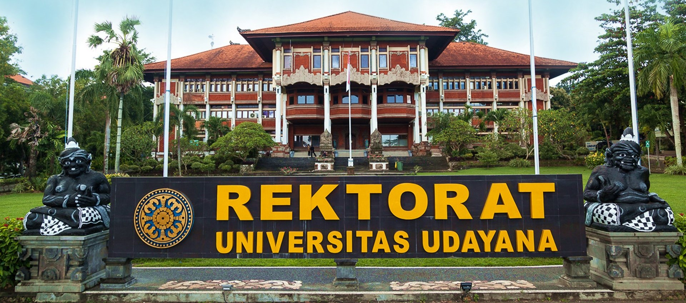

UNIVERSITAS UDAYANA
Universitas Udayana, disingkat UNUD, adalah perguruan tinggi negeri di Bali, Indonesia, yang berdiri pada 29 September 1962. Rektor Universitas Udayana dari tahun 2017-2022 adalah Prof. Dr. dr. Anak Agung Raka Sudewi, Sp.S (K).
Cikal bakal Unud adalah Fakultas Sastra Udayana cabang Universitas Airlangga yang diresmikan oleh P. J. M. Presiden Republik Indonesia Ir. Soekarno, dibuka oleh J. M. Menteri P.P dan K. Prof. DR. Priyono pada tanggal 29 September 1958 sebagaimana tertulis pada Prasasti di Fakultas Sastra Jalan Nias Denpasar. Universitas Udayana secara sah berdiri pada tanggal 17 Agustus 1962 dan merupakan perguruan tinggi negeri tertua di daerah Provinsi Bali. Sebelumnya, sejak tanggal 29 September 1958 di Bali sudah berdiri sebuah Fakultas yang bernama Fakultas Sastra Udayana sebagai cabang dari Universitas Airlangga Surabaya. Fakultas Sastra Udayana inilah yang merupakan embrio daripada berdirinya Universitas Udayana. Berdasarkan Surat Keputusan Menteri PTIP No.104/1962, tanggal 9 Agustus 1962, Universitas Udayana secara sah berdiri sejak tanggal 17 Agustus 1962. Tetapi oleh karena hari lahir Universitas Udayana jatuh bersamaan dengan hari Proklamasi Kemerdekaan Republik Indonesia maka perayaan Hari Ulang Tahun Universitas Udayana dialihkan menjadi tanggal 29 September dengan mengambil tanggal peresmian Fakultas Sastra yang telah berdiri sejak tahun 1958.